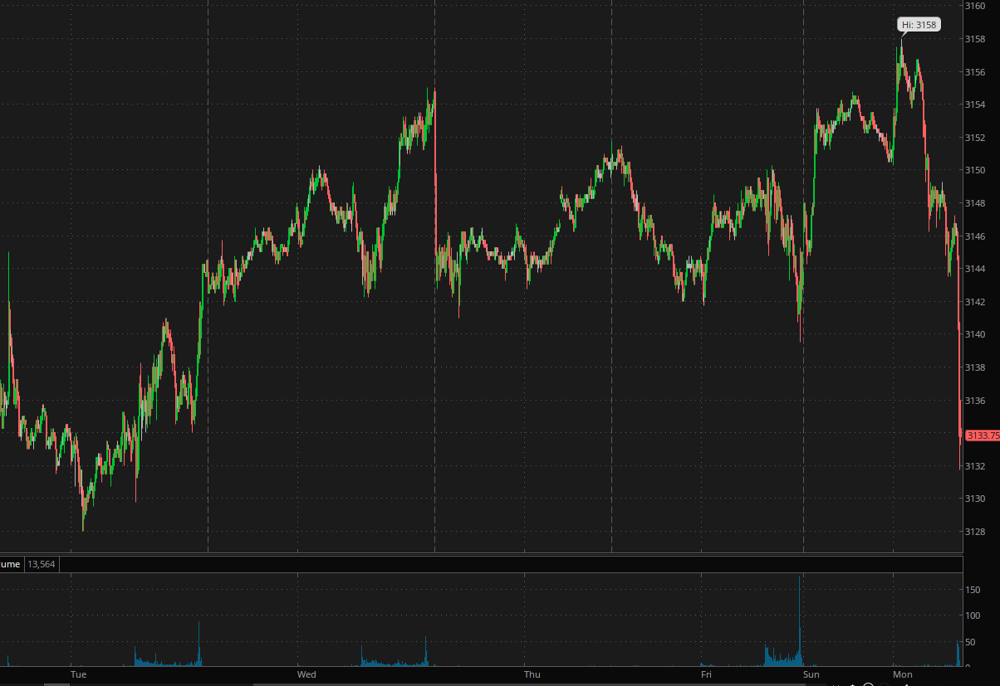
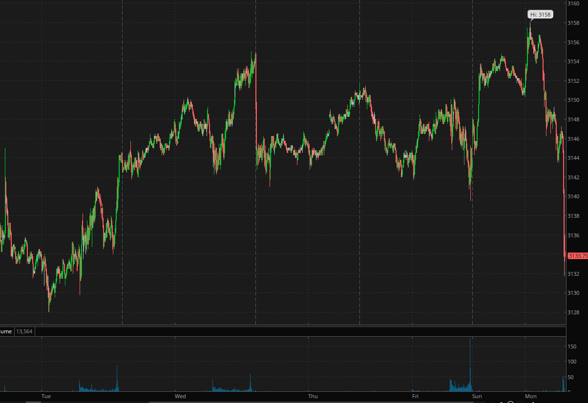
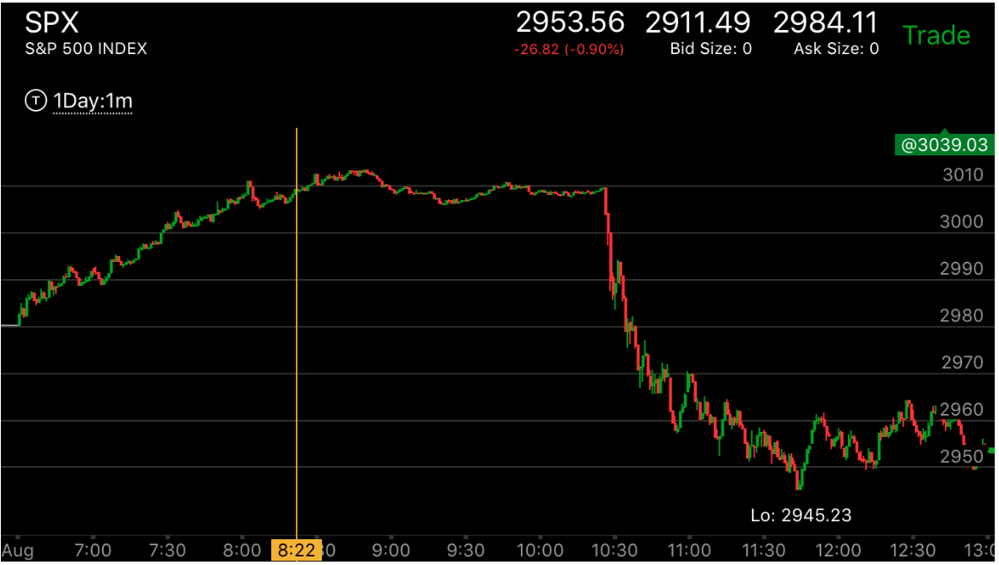
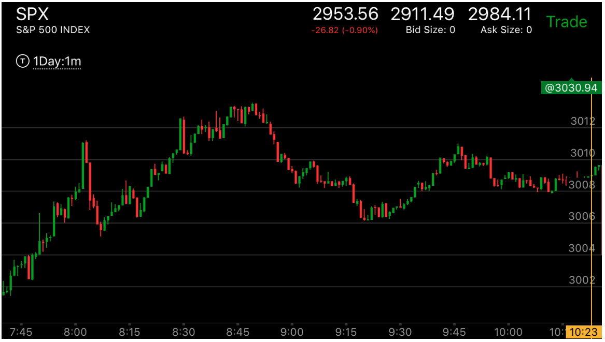
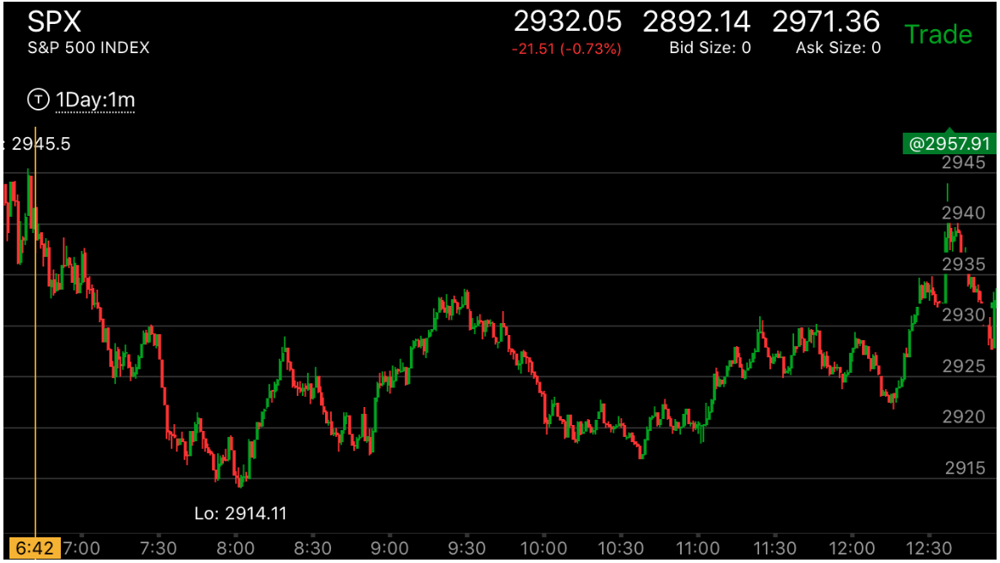

反向以后，一直没有越过走势开始的点，长时间的震荡，形成积累走势
- 在一个走势末期，常常会出现一个5浪或者多浪上涨/下跌，作为结束，结束后，它应该越过开始点，如果长时间不越过，
在开始点附近长时间震荡，这样未来会大大超过开始点。当然一定要确认这个最后的冲刺是转折了，而不是简单的运动。
如果没有彻底转折，那么会越过前面的走平点后，继续运动。5浪走势的最后一浪一定是比较大的，这样才会真的反转，
如果很小，那么会反向运动后，再次持续原来的方向。
 


图示:看图二，它在Wed走出了一个三段走势，应该反转，它从高点快速下跌，但是没有超过
走势的起点，震荡了超过2天，然后冲高，在高点走出了图一的走势，大跌。这个可能算是一个积累走势，
因为它没有一个底部的样子，虽然创新高，也是会跌了。


图示:
1.7:30从底部上涨，它在8：20出现了加速冲高，本来应该反转了，然后立刻走出一个两段下跌走势。这样使得它并没有到达顶部。
从另外一个角度看，它在8：20并没有创新高，这个并不符合走势反转的要求。8：40开始它出现了一个5浪走势，创新高。
而第5浪很大，形成了反转走势。但是这时要点来了。它在之后两个小时内，连这个5浪走势都没有反转。这个说明它在酝酿很大的走势。
一定要紧紧抓住
2. 11：00宣布利率后，这个长达2个小时的运动的走势，大幅下跌，创新低后，立刻拉回。它虽然没有形成跨越走势，但是也没有到达底部，
特别是前面有两个小时的运动铺垫，它会大幅下跌。第二张图可以看到它一下跌了50个点。


图示:
1.8:00创新高后，快速拉回，说明这个不是一个顶点，它开始再次缓慢上涨，这个上涨出现了一个5浪上涨走势，
要注意它的第一浪幅度不大，这样为将来的反转打好了基础，8：30的冲高，其实到达了顶部，幅度已经超过了第一浪。
但是它再次拉回，说明不是顶部。它然后缓慢的
走出了一个两段上涨走势。顶部走平。这样就成了一个顶部了。它一定会反转，而且应该跌倒低于走势的开始，3005附近。
但是它下跌后，不但没有低于3005，只是接近，然后反弹，反向越过了下跌的走平点，形成了上涨的加速。
它的下跌的方法也值得注意。8：50开始下跌后，它的第一浪很大。这样除非出现下跌加速，或者更大幅度的第二浪，
它不会反转。9：15的下跌，是一个走平后的加速下跌，而且它的幅度不如第一浪。所以下跌的走势并没有反转。
这样，上涨的走势已经反转，而下跌的走势一直没有反转，而下跌的时候，一直没有超过上涨的开始，反而上涨
超过前面的走平点，形成上涨的加速走势。所以的线索都只有一个方向，那就是下跌。
2. 从时间上看，它下跌用了一个小时，也没有反转了它前面的上涨。这样就变成了一个积累走势，这样的走势一定会大跌的。
一旦下跌，就要紧紧拿住。

图示:7：50开始的上涨，本身第一浪就很大，这样的上涨难以持续，再次上涨后，走平，它没有超过前面
走平的地方，所以继续上涨，观察8：30的走势，它从一个低点，冲高，走平，再次大幅冲高，再次走平，这样其实已经具备了这个走势反转的
条件了。但是它下来后，一直高于2994这个最后冲刺的开始的地方，到了10：30甚至开始上涨，让做空的人更加绝望，这样就积累了很多能量，
一旦下跌，它不会只停留在这个点下面，而是会低于更大的浪下面。

图示:2914出现了新低后，返回的走势。这样就反转了。但是也可能是部分反转。所以要看它反弹的样子。
它的第一浪反弹很大。下跌后，可以看到它在8：20的高点是尖锐的，立刻就下来了。说明未来会继续上涨。
8：50开始了上涨。它是分段上涨的。它的第一浪很大。8个点。后来的几浪幅度都很小。而且没有上涨的加速走势。就开始下来了。
这时，可以分析，它虽然似乎是个两段上涨走势。但是从8：50开始的上涨走势没有结束，就下来了。而且它下来的时候的形状本身也
说明问题，它下来的时候，第一浪比较小，9：40开始的第二浪下跌很大。这样，这个下来的走势就反转了。这样，它的下跌走势反转，
而上涨走势没有反转。两者结合都说明要上涨了。10：30创走势新低后，反弹，说明没有跨越。说明确实要涨了。从11：20到12：20
它长时间的震荡，第一个高点11：20，是尖锐的，第二个高点是平的，但是低于第一个高点，这样不是顶部的形状。而它时间很长。
说明未来一定要超过9：30出现的高点。它在12：20回调，填补真空后，大涨。但是它没有全面反转，只是回到开盘高点后，下跌。